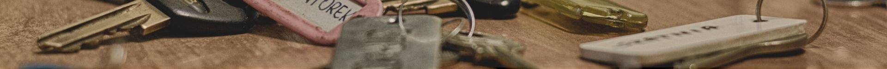

Curious about the world, searching for a new life path and ready to tackle obstacles that were waiting for him he decided to travel across Europe. His first destination was Germany, where he moved in in 1977. After he learnt the language, found a job and started studying, he finally felt that he was in the right place. Unable to sit around he decided to spend his Christmas holidays abroad. He wanted to visit European countries so starting from Germany, he travelled through Poland and finished in Denmark.
Go BackDuring his stay in Denmark he met this smiley and lovely young woman. You can imagine that it was love from the first sight. Unfortunately, almost like in Shakespeare’s drama, many obstacles stood on their bright way. It was very hard to get a permit of residence in Denmark so he did not have any other options, just to go home.What is more, his Danish girlfriend ripped his passport as she wanted him to stay. Too hard to describe how rough time it was for this lovely couple. Having everything pulled together they manage to get married. To make you stomach flutter and set your heart on fire, the woman gave him offspring fifteen days after.
Go Back That’s when a great opportunity came by. His wife’s father gave him a shop in a newly opened Bazar Vest, a place where all the nationalities are welcome and can work together as a family. He became really good friends with owner. Their goal was to create a spot of culture, spices, colors and scent. To give people with different origin background opportunity to show their traditions and create a shopping experience in itself. From heating boiler factory to maze of bazar streets and colorful marketplace. The Bazar gave each of the shop owners a second chance, so they want to return the favour by treating their customers hospitably.
Go BackTlf: 58526566
E-mail: keyman@gmail.com
Address: Edwin Rahrs Vej 32, 8220 Brabrand
Tuesday - Sunday: 10.00 - 18.00
Monday: Closed